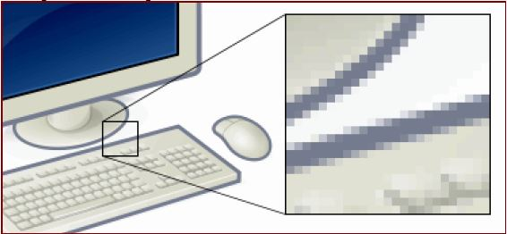

Лекция № 3
Мультимедиа
Понятие мультимедиа
Мультимедиа – одновременное использование различных форм представления информации и ее обработки в едином объекте-контейнере. Например, в одном объекте-контейнере может содержаться текстовая, аудиальная, графическая и видео информация, а также, возможно, способ интерактивного взаимодействия с ней. Термин мультимедиа также зачастую используется для обозначения носителей информации, позволяющих хранить значительные объемы данных и обеспечивать достаточно быстрый доступ к ним (первыми носителями такого типа были CD-ROM). В таком случае термин мультимедиа означает, что компьютер может использовать такие носители и предоставлять информацию пользователю через все возможные виды данных, такие как аудио, видео, анимация, графика и другие в дополнение к традиционным способам представления информации, таким как текст.
История термина мультимедиа
В 1965 году термин «мульти-медиа» был использован для описания Exploding Plastic Inevitable – шоу, совместившего в себе живую рок-музыку, кино, экспериментальные световые эффекты и нетрадиционное искусство. В течение сорока лет данный термин приобретал различные значения. В конце 1970-х годов этот термин обозначал презентации, составленные из изображений, получаемых от нескольких проекторов, синхронизированных со звуковой дорожкой. В 1990-х этот термин приобрел современное нам значение.
Классификация мультимедиа
Мультимедиа может быть классифицирована на две основные группы:
- Линейная. Аналогом линейного способа представления является кино. Человек, просматривающий данный документ, никаким образом не может повлиять на его вывод.
- Нелинейная. Нелинейный способ представления информации позволяет человеку участвовать в выводе информации, взаимодействуя каким-либо образом со средством отображения мультимедийных данных. Участие человека в данном процессе также называется интерактивностью. Нелинейный способ представления мультимедийных данных иногда называется термином «гипермедиа».
В качестве примера линейного и нелинейного способа представления информации, можно рассматривать такую ситуацию, как проведение презентации. Если презентация была записана на пленку и показывается аудитории, то этот способ донесения информации может быть назван линейным, так как просматривающие данную презентацию не имеют возможности влиять на докладчика. В случае же живой презентации аудитория имеет возможность взаимодействовать с докладчиком (например, задавать ему вопросы), что позволяет ему отходить от темы презентации, поясняя некоторые термины или более подробно освещая спорные части доклада. Таким образом, живая презентация может быть представлена, как нелинейный (интерактивный) способ подачи информации.
Структурные компоненты мультимедиа
Рассмотрим основные компоненты мультимедийных объектов.
Текст
Текст – это упорядоченный набор предложений, предназначенный для того, чтобы выразить некий смысл. В смысловой цельности текста отражаются те связи и зависимости, которые имеются в самой действительности (общественные события, явления природы, человек, его внешний облик и внутренний мир, предметы неживой природы и т.д.).
Восприятие текста изучается в рамках таких дисциплин, как лингвистика текста и психолингвистика.
Текстовый файл – обычная форма представления текста на компьютере. Каждый символ из используемого набора символов кодируется в виде одного байта, а иногда в виде последовательности подряд идущих двух, трех и более байтов.
Особой разновидностью текстовых данных следует считать т.н. гипертекст. Термин «гипертекст» был введен Тедом Нельсоном в 1965 году для обозначения «текста ветвящегося или выполняющего действия по запросу». Обычно гипертекст представляется набором текстов, содержащих узлы перехода от одного текста к какому-либо другому, позволяющие избирать читаемые сведения или последовательность чтения. Общеизвестным и притом ярко выраженным примером гипертекста служат веб-страницы – документы на HTML (гипертекстовом языке разметки), размещенные в интернете.
Существуют стилистические, жанровые и тематические классификации текста.
Аудио
Аудио (от лат. audio – «слышу») – общий термин, относящийся к звуковым технологиям. Как правило, под термином аудио понимают звук, записанный на звуковом носителе, а также запись и воспроизведение звука, звукозаписывающая и звуковоспроизводящая аппаратура.
Таким образом, аудиальный компонент мультимедийной информации предназначен для передачи звуковых данных. Как физическое явление звук изучается в рамках акустики, но при этом акустика является междисциплинарной наукой, использующей для решения своих проблем широкий круг дисциплин: математику, физику, психологию, архитектуру, электронику, биологию, теорию музыки и др. Непосредственное отношение к вопросам мультимедиа-технологий имеют такие направления современной акустики, как музыкальная акустика, электроакустика, акустика речи, цифровая акустика.
По содержанию аудиальный компонент мультимедиа обычно классифицируется на музыкальный и речевой звук. Музыкальный звук обладает следующими характеристиками:
- определенной высотой (обычно от 16 до 4500 Гц);
- тембром, который определяется присутствием в звуке обертонов и зависит от источника звука;
- громкостью, которая не может превышать болевого порога;
- длительностью.
Речевой звук образуется произносительным аппаратом человека с целью языкового общения. Звуки речи подразделяются на шумы и тоны. Тоны в речи возникают в результате колебания голосовых связок; шумы образуются вследствие непериодических колебаний выходящей из легких струи воздуха. С точки зрения акустики речевые звуки представляют собой колебания упругой среды, обладающие определенным спектром, интенсивностью и диапазоном. Наиболее известной характеристикой речевого сигнала является основной тон. Эта характеристика представляет собой обычную частотную модуляцию сигнала, параметры которой легко измеряются. Период основного тона разных людей (мужчин, женщин, детей) находится в диапазоне 50-250 Гц.
Среди звуковых носителей информации выделяют аналоговые и цифровые носители. Для целей мультимедиа-технологий наибольшее значение имеют последние, причем преимущественно это аудио-файлы, значительное количество которых было разработано в последние годы. В классификации форматов аудио-файлов выделяют форматы без потерь и форматы с потерями. Аудиоформаты без потерь предназначены для точного (с точности до частоты дискретизации) представления звука. В свою очередь они делятся на несжатые и сжатые форматы.
Примеры несжатых форматов:
- RAW – сырые замеры без какого-либо заголовка или синхронизации.
- WAV (Waveform audio format) – разработан Microsoft совместно с IBM, распространенная форма представления звуковых данных небольшой продолжительности.
- CDDA – стандарт для аудио-CD. Первая редакция стандарта издана в июне 1980 года компаниями Philips и Sony, затем была доработана организацией Digital Audio Disc Committee.
Примеры сжатых форматов:
- WMA (Windows Media Audio 9 Lossless) – лицензируемый формат аудио-файлов, разработанный компанией Microsoft для хранения и трансляции. В рамках формата есть возможность кодирования звука как с потерей, так и без потери качества.
- FLAC (Free Audio Lossles Audio Codec) – популярный формат для сжатия аудиоданных. Поддерживается многими аудио-приложениями, а также устройствами воспроизведения звука.
Аудиоформаты с потерями ориентированы в первую очередь на по возможности компактное хранение звуковых данных: при этом идеально точное воспроизведение записанного звука не гарантируется. Примеры таких форматов:
- MP3 – лицензируемый формат файла для хранения аудиоинформации, разработанный рабочей группой института Фраунхофера MPEG в 1994 году. На данный момент MP3 является самым известным и популярным из распространенных форматов цифрового кодирования звуковой информации с потерями. Он широко используется в файлообменных сетях для передачи музыкальных произведений. Формат может проигрываться в любой современной операционной системе, на практически любом портативном аудио-плеере, а также поддерживается всеми современными моделями музыкальных центров и DVD-плееров.
- Vorbis – свободный формат сжатия звука с потерями, появившийся летом 2002 года. Психоакустическая модель, используемая в Vorbis, по принципам действия близка к MP3. По всевозможным оценкам этот формат является вторым по популярности после MP3 форматом компрессии звука с потерями. Широко используется в компьютерных играх и в файлообменных сетях для передачи музыкальных произведений.
- AAC (Advanced Audio Coding) – формат аудио-файла с меньшей потерей качества при кодировании, чем MP3 при одинаковых размерах. Изначально создавался как преемник MP3 с улучшенным качеством кодирования, но в настоящий момент распространен существенно меньше, чем MP3.
- WMA – см. выше.
Компьютерная графика
Данное направление мультимедийных технологий предназначено для передачи пользователю визуальных изображений. Первые вычислительные машины не имели отдельных средств работы с графикой, однако уже использовались для получения и обработки изображений. Существенный прогресс компьютерная графика испытала с появлением возможности запоминать изображения и выводить их на компьютерном дисплее.
По способам построения изображений компьютерную графику можно разделить на двумерную и трехмерную графику. Двумерная компьютерная графика (2D) классифицируется по типу представления графической информации, и следующими из него алгоритмами обработки изображений. Известны следующие виды двумерной графики:
- Растровая графика. Эта разновидность двумерной графики всегда оперирует двумерным массивом (матрицей) пикселов. Пиксел (или пиксель) – мельчайшая единица растрового изображения, представляющая собой неделимый объект прямоугольной (обычно квадратной) формы, обладающий определенным цветом. Без особых потерь визуального качества растровые изображения можно только уменьшать; увеличение же растровых изображений приводит к увеличению дискретности изображения (см. рис. 1). В растровом виде представимо любое изображение, однако этот способ хранения характеризуется большим объемом памяти, необходимым для работы с изображениями и потерями при редактировании.

рис. 1. Результат увеличения растрового изображения
- Векторная графика. Представляет изображение как набор примитивов, в качестве которых обычно выбираются точки, прямые, окружности, прямоугольники, а также сплайны некоторого порядка. Объектам присваиваются некоторые атрибуты (толщина линий, цвет заполнения и т.д.). Рисунок хранится как набор координат, векторов и других численных значений, характеризующих набор примитивов. Изображение в векторном формате дает простор для редактирования, поскольку может без потерь (в отличие от растрового изображения) масштабироваться, поворачиваться, деформироваться. Вместе с тем, не всякое изображение может быть представлено в виде набора примитивов. Такой способ представления хорош для схем, используется для масштабируемых шрифтов, деловой графики, очень широко используется для создания мультфильмов и просто роликов разного содержания.
- Фрактальная графика. Фракталов в общем смысле называется объект, отдельные элементы которого наследуют свойства родительских структур. Поскольку более детальное описание элементов меньшего масштаба происходит по простому алгоритму, описать такой объект можно всего лишь несколькими математическими уравнениями.
Трехмерная компьютерная графика (3D) оперирует с объектами в трехмерном пространстве. Обычно результаты визуализации трехмерной графики представляют собой плоскую картинку, проекцию. В трехмерной графике все объекты обычно представляются как набор поверхностей или частиц. Минимальную поверхность называют полигоном. В качестве полигона чаще всего выбирают треугольники.
Для передачи и хранения цвета в компьютерной графике используются различные формы его представления. В общем случае цвет представляет собой набор чисел, координат в некоторой цветовой системе. Известны, например, следующие модели цветопередачи:
- RGB (аббревиатура английских слов Red, Green, Blue – красный, зеленый, синий) – аддитивная цветовая модель: цвета получаются путем добавления к черному. Иначе говоря, если цвет экрана, освещенного цветным прожектором, обозначается как (r1, g1, b1), а цвет того же экрана, освещенного другим прожектором, – (r2, g2, b2), то при освещении двумя этими прожекторами цвет экрана будет обозначаться как (r1+r2, g1+g2, b1+b2). Выбор основных цветов обусловлен особенностями физиологии восприятия цвета сетчаткой человеческого глаза. Цветовая модель RGB нашла широкое применение в технике. В телевизорах и мониторах применяются три электронные пушки (либо три вида светодиодов, светофильтров и др.) для красного, зеленого и синего каналов.
- CMYK (от англ. Cyan, Magenta, Yellow, black – голубой, пурпурный, желтый, черный) – субтрактивная схема формирования цвета, используемая обычно в полиграфии для стандартной триадной печати.
- HSV (от англ. Hue, Saturation, Value – тон, насыщенность, значение) – цветовая модель, в которой координатами являются цветовой тон, насыщенность (называемая также чистотой цвета) и значением (яркостью) цвета. Данная модель является нелинейным преобразованием модели RGB.
Компьютерная графика представляет собой одно из наиболее мощных современных направлений развития компьютерных технологий.
Видео
Видео (от лат. video – «смотрю», «вижу») – под этим термином понимают широкий спектр технологий записи, обработки, передачи, хранения и воспроизведения визуального и аудиовизуального материала на мониторах.
Наиболее важные характеристики видеосигнала – это количество кадров в секунду, развертка, разрешение, соотношение сторон, цветовое разрешение, ширина видеопотока, качество. Рассмотрим эти характеристики по отдельности.
Количество кадров в секунду (частота) – это число неподвижных изображений, сменяющих друг друга при показе 1 секунды видеоматериала и создающих эффект движения на экране. Чем больше частота кадров, тем более плавным и естественным будет казаться движение. Минимальный показатель, при котором движение будет восприниматься однородным – примерно 10 кадров в секунду (это значение индивидуально для каждого человека). Компьютерные оцифрованные видеоматериалы хорошего качества, как правило, используют частоту 30 кадров в секунду.
Развертка видеоматериала может быть прогрессивной (построчной) или чересстрочной (интерлейсинг). При прогрессивной развертке все горизонтальные линии (строки) изображения отображаются одновременно, при чересстрочной – показываются попеременно четные и нечетные строки. Чересстрочная развертка была изобретена для показа изображения на кинескопах и используется сейчас для передачи видео по «узким» каналам, не позволяющим передавать изображение во всем качестве.
Любой видеосигнал характеризуется вертикальным и горизонтальным разрешением, измеряемым в пикселах (см. выше). Обычное аналоговое телевизионное разрешение составляет 720×576 пикселей. Новый стандарт высокоотчетливого цифрового телевидения HDTV предполагает разрешения до 1920×1080 с прогрессивной разверткой.
Соотношение ширины и высоты кадра – важнейший параметр в любом видеоматериале. Старому стандарту, который предписывает соотношение сторон как 4:3, появившемуся еще в 1910 году, на смену приходит более соответствующий естественному полю зрения человека стандарт 16:9, на который сейчас ориентируется цифровое телевидение.
Количество цветов и цветовое разрешение видеосигнала описывается цветовыми моделями, рассмотренными ранее. В компьютерной технике применяется в основном RGB и HSV.
Ширина видеопотока или битрейт (от англ. bit rate – частота битов) – это количество обрабатываемых бит видеоинформации за секунду времени. Чем выше ширина видеопотока, тем в общем лучше качество видео. Например, для формата VideoCD битрейт составляет всего примерно 1 Мбит/с, для DVD – около 5 Мбит/с, а для формата HDTV – около 10 Мбит/с.
Качество видео измеряется с помощью формальных метрик, таких, как PSNR или SSIM, или с использованием субъективного сравнения с привлечением экспертов.
Из современных стандартов цифрового кодирования и сжатия видеоматериалов можно выделить следующие:
- MPEG-2 – группа стандартов цифрового кодирования видео и аудио сигналов. MPEG-2 в основном используется для кодирования видео и аудио при вещании, включая спутниковое вещание и кабельное телевидение. С некоторыми модификациями этот формат также используется как стандарт для сжатия DVD.
- MPEG-4 – новый международный стандарт сжатия цифрового видео и аудио, появившийся в 1998 году. Используется для вещания (потоковое видео), записи дисков с фильмами, видеотелефонии и широковещания. Включает в себя многие функции MPEG-2 и других стандартов, добавляя такие функции, как поддержка языка виртуальной разметки VRML для показа 3D-объектов, объектно-ориентированные файлы, поддержка управления правами и разные типы интерактивного медиа.
- Ogg Theora – видеокодек, разработанный Фондом Xiph.Org как часть их проекта «Ogg» (целью этого пректа является интеграция видеокодека On2 VP3, аудиокодека Ogg Vorbis и мультимедиа-контейнера Ogg в одно мультимедийное решение, наподобие MPEG-4). Полностью открытый, свободный в лицензионном отношении мультимедиа-формат.
Применение мультимедиа-технологий
Мультимедиа-технологии нашли широкое применение в таких сферах человеческой деятельности, как искусство, образование, индустрия развлечений, медицина, бизнес, научные исследования и др. В настоящее время мультимедийный способ передачи информация стал неотъемлемым элементом современных компьютерных систем.
CASE-средства
Проблематика разработки ИС
Тенденции развития современных информационных технологий приводят к постоянному возрастанию сложности информационных систем (ИС), создаваемых в различных областях экономики. Современные крупные проекты ИС характеризуются, как правило, следующими особенностями:
- Сложность описания, требующая тщательного моделирования и анализа данных и процессов;
- Наличие совокупности тесно взаимодействующих компонентов, имеющих свои локальные задачи и цели функционирования;
- Отсутствие прямых аналогов, ограничивающее возможность использования каких-либо типовых проектных решений и прикладных систем;
- Необходимость интеграции существующих и вновь разрабатываемых приложений;
- Функционирование в неоднородной среде на нескольких аппаратных платформах;
- Разобщенность и разнородность отдельных групп разработчиков по уровню квалификации и сложившимся традициям использования тех или иных инструментальных средств;
- Существенная временная протяженность проекта, обусловленная, с одной стороны, ограниченными возможностями коллектива разработчиков, и, с другой стороны, масштабами организации-заказчика и различной степенью готовности отдельных ее подразделений к внедрению ИС.
Для успешной реализации проекта объект проектирования (ИС) должен быть прежде всего адекватно описан, должны быть построены полные и непротиворечивые функциональные и информационные модели ИС. Накопленный к настоящему времени опыт проектирования ИС показывает, что это логически сложная, трудоемкая и длительная по времени работа, требующая высокой квалификации участвующих в ней специалистов.
Структурный подход к проектированию ИС
В 70-х и 80-х годах при разработке ИС достаточно широко применялась структурная методология, предоставляющая в распоряжение разработчиков строгие формализованные методы описания ИС и принимаемых технических решений.
Сущность структурного подхода к разработке ИС заключается в ее декомпозиции (разбиении) на автоматизируемые функции: система разбивается на функциональные подсистемы, которые в свою очередь делятся на подфункции, подразделяемые на задачи и так далее. Процесс разбиения продолжается вплоть до конкретных процедур. При этом автоматизируемая система сохраняет целостное представление, в котором все составляющие компоненты взаимоувязаны. При разработке системы «снизу-вверх» от отдельных задач ко всей системе целостность теряется, возникают проблемы при информационной стыковке отдельных компонентов.
Все наиболее распространенные методологии структурного подхода базируются на ряде общих принципов. В качестве двух базовых принципов используются следующие:
- Принцип «разделяй и властвуй» – принцип решения сложных проблем путем их разбиения на множество меньших независимых задач, легких для понимания и решения;
- Принцип иерархического упорядочивания – принцип организации составных частей проблемы в иерархические древовидные структуры с добавлением новых деталей на каждом уровне.
Выделение двух базовых принципов не означает, что остальные принципы являются второстепенными, поскольку игнорирование любого из них может привести к непредсказуемым последствиям (в том числе и к провалу всего проекта). Основными из этих принципов являются следующие:
- Принцип абстрагирования – заключается в выделении существенных аспектов системы и отвлечения от несущественных;
- Принцип формализации – заключается в необходимости строгого методического подхода к решению проблемы;
- Принцип непротиворечивости – заключается в обоснованности и согласованности элементов;
- Принцип структурирования данных – заключается в том, что данные должны быть структурированы и иерархически организованы.
Наглядность и строгость средств структурного анализа позволяла разработчикам и будущим пользователям системы с самого начала неформально участвовать в ее создании, обсуждать и закреплять понимание основных технических решений. Однако, широкое применение этой методологии и следование ее рекомендациям при разработке конкретных ИС встречалось достаточно редко, поскольку при неавтоматизированной (ручной) разработке это практически невозможно.
Проектирование ИС с применением CASE-технологий
Рассмотренная ситуация способствовала появлению программно-технологических средств специального класса – CASE-средств, реализующих CASE-технологию создания и сопровождения ИС. Термин CASE (Computer Aided Software Engineering) используется в настоящее время в весьма широком смысле. Первоначальное значение термина CASE, ограниченное вопросами автоматизации разработки только лишь программного обеспечения (ПО), в настоящее время приобрело новый смысл, охватывающий процесс разработки сложных ИС в целом. Теперь под термином CASE-средства понимаются программные средства, поддерживающие процессы создания и сопровождения ИС, включая анализ и формулировку требований, проектирование прикладного ПО (приложений) и баз данных, генерацию кода, тестирование, документирование, обеспечение качества, конфигурационное управление и управление проектом, а также другие процессы. CASE-средства вместе с системным ПО и техническими средствами образуют полную среду разработки ИС.
CASE-технология представляет собой методологию проектирования ИС, а также набор инструментальных средств, позволяющих в наглядной форме моделировать предметную область, анализировать эту модель на всех этапах разработки и сопровождения ИС и разрабатывать приложения в соответствии с информационными потребностями пользователей. Большинство существующих CASE-средств основано на методологиях структурного (в основном) или объектно-ориентированного анализа и проектирования, использующих спецификации в виде диаграмм или текстов для описания внешних требований, связей между моделями системы, динамики поведения системы и архитектуры программных средств.
Современные CASE-средства охватывают обширную область поддержки многочисленных технологий проектирования ИС: от простых средств анализа и документирования до полномасштабных средств автоматизации, покрывающих весь жизненный цикл ПО.
Обычно к CASE-средствам относят любое программное средство, автоматизирующее ту или иную совокупность процессов жизненного цикла ПО и обладающее следующими основными характерными особенностями:
- мощные графические средства для описания и документирования ИС, обеспечивающие удобный интерфейс с разработчиком и развивающие его творческие возможности;
- интеграция отдельных компонент CASE-средств, обеспечивающая управляемость процессом разработки ИС;
- использование специальным образом организованного хранилища проектных метаданных (репозитория).
Интегрированное CASE-средство (или комплекс средств, поддерживающих полный жизненный цикл ПО) содержит следующие компоненты;
- Репозиторий, являющийся основой CASE-средства. Он должен обеспечивать хранение версий проекта и его отдельных компонентов, синхронизацию поступления информации от различных разработчиков при групповой разработке, контроль метаданных на полноту и непротиворечивость;
- Графические средства анализа и проектирования, обеспечивающие создание и редактирование иерархически связанных диаграмм (DFD, ERD и др.), образующих модели ИС;
- Средства разработки приложений, включая языки 4GL и генераторы кодов;
- Средства конфигурационного управления;
- Средства документирования;
- Средства тестирования;
- Средства управления проектом;
- Средства реинжиниринга.
На сегодняшний день Российский рынок программного обеспечения располагает следующими наиболее развитыми CASE-средствами:
- Vantage Team Builder (Westmount I-CASE);
- Designer/2000;
- Silverrun;
- ERwin+BPwin;
- S-Designor;
- CASE.Аналитик.
Кроме того, на рынке постоянно появляются как новые для отечественных пользователей системы (например, CASE /4/0, PRO-IV, System Architect, Visible Analyst Workbench, EasyCASE), так и новые версии и модификации перечисленных систем.